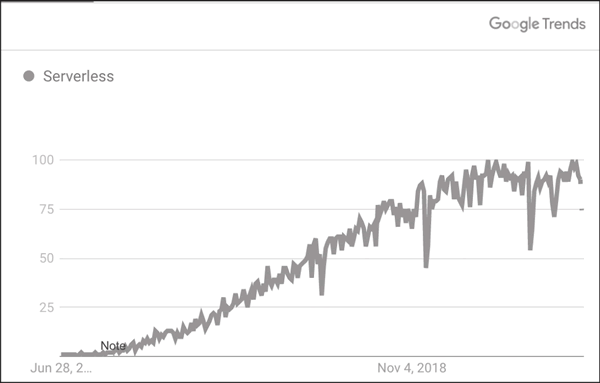
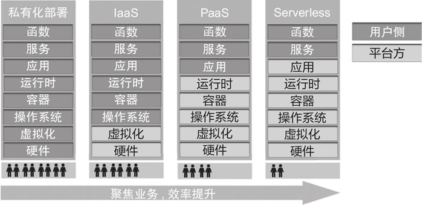
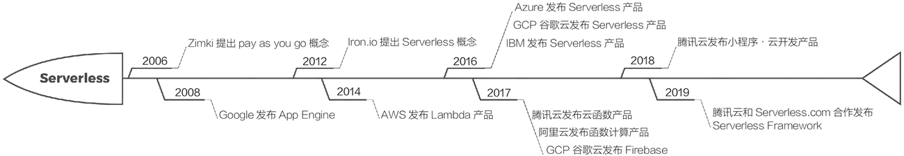
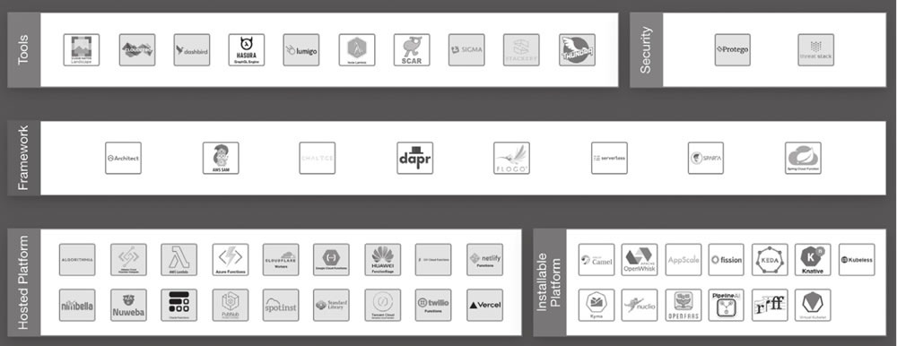

首页 > 编程笔记
Serverless介绍（非常详细）
本节主要针对 Serverless 的概念进行分析和梳理，并举例说明 Serverless 的技术特性，帮助读者对 Serverless 建立一个初步的认知。
分析维基百科里对 Serverless Computing 一词的解释，也许可以帮助我们对 Serverless 的概念有更好的了解：无服务器计算（Serverless Computing）又称为函数即服务（Function as a Service，FaaS），是云计算的一种模型。云服务商通过运行服务器，动态管理和分配对应的计算资源，最终以资源实际使用量来收取费用。
分析上述定义，我们可以得到以下结论：
首先，Serverless 并不是没有服务器，它只是将服务器的运维、管理和分配都托管给了云提供商。其次，正因为云提供商对资源进行了运维、管理和分配，才让 Serverless 的概念和云计算密不可分。
最后，对于用户而言，集中的管理和运维开放出来的能力特性也十分明显：一方面，用户无须关注业务的扩缩容，云平台会根据请求实现底层资源的动态伸缩；另一方面，弹性的好处也反映在了计费方式上，Serverless 架构打破了传统的包年、包月或按小时付费的模式，真正实现了按用户的实际使用情况计费，更加灵活和友好。
Serverless 的意义不仅在于计算，也在于提供后端服务的 Serverless 化。如果把 Serverless Computing 称为 FaaS，那么和 FaaS 对应的则是 Backend as a Service（BaaS，后端即服务）。结合这样的架构，我们可以对 Serverless 做出定义。
Serveless 是基于云计算的一种模型，是“函数即服务”和“后端即服务”的总和。云服务商托管计算、存储、数据库等服务资源，进行动态的管理和分配，之后提供给用户，而费用则基于资源的实际使用量来计算。
如今很多家庭购买私家车满足出行需要，这样做的好处是可以长期使用这台车，但是劣势也比较明显，比如需要进行定期维护和保养。
近年来涌现许多汽车租赁平台，通过按日/月租车的方式，满足用户短期出行的需求。而近几年兴起的打车软件，则随需随用、只付路程费，能灵活满足各种出行需求。
以上 3 种出行方式分别对应业务架构中的物理资源独占、虚拟机和 Serverless：
搜索引擎中关键词 Serverless 的热度可以很好地反映 Serverless 的技术趋势。图 1 展示了 Serverless 这个关键词过去 5 年在谷歌的搜索热度。
可以看到，2015~2020 年，随着云计算技术的发展和逐步成熟，Serverless 的搜索趋势有着爆发式的增长。
各行各业逐步和科技紧密结合，通过交付软件提供服务，诞生了餐饮和外卖/点餐系统的结合，出行和打车系统/乘车付费软件的结合等。企业对于软件的需求越来越旺盛，提升软件开发效率、降低软件开发和部署的难度成为开发者持续的追求。基于上述目标，技术的变革和更新从未停止。
说起Serverless的发展历程，可以先看Serverless出现之前传统软件架构的组织形态，便于我们更好地理解为什么 Serverless 是云计算的革命和趋势。
物理机本身的交付周期长，扩缩容不够灵活，还需要专门配备运维人员提供系统的安装、维护、升级等服务。在这种情况下，部署的最小单元就是物理服务器。
虚拟机基于物理服务器集群，通过对物理机进行虚拟化的方式提供服务。这种方式让用户摆脱了硬件运维，可以更多地关注系统、软件的升级和业务开发。
同时，虚拟化的方式让故障迁移变得更加容易，在系统出现故障时可以将虚拟机从一台物理机群迁移到另一台。典型的虚拟化技术有 XEN、KVM 等。在这种情况下，业务部署的最小单元为虚拟机。
容器可以将系统内的依赖打包，提供可移植、相互隔离的运行环境。跟随容器也衍生出了非常多的调度、编排工具，Docker 就是典型的容器技术。在这种情况下，业务的最小部署单元为容器。
不同时期的软件开发、架构实现方式的变化如图 2 所示。
从图 2 可以看出，随着软件开发架构的演变，用户需要关心的部分越来越少，由供应商承担的部分越来越多。
在 Serverles 架构下，用户仅需要关心业务实现，而操作系统、虚拟化和硬件层面的实现则全部交给服务商统一维护，达到了提高软件开发/交付效率、降低成本（资源成本、人力成本）的目的。
图 3 梳理了一些 Serverless 发展历程中的里程碑事件。
由于Serverless技术还在快速发展和上升的阶段，也面临着性能、平台、成本和安全等方面的挑战。
不同开发语言的 Web 框架都可以支持 Serverless 部署，例如 Python Flask、Node Express.js、 Next.js、PHP Laravel 等。但由于 Serverless FaaS 层事件触发、无状态的特性，针对Web框架的支持需要一定的适配成本，可以通过中间层来实现，这部分内容在后续章节的实战中也会详细说明。
通过队列中的消息/日志等触发函数的计算平台，对数据进行处理后再次投递到后端做备份存储和离线分析，Serverless的计算节点可以很好地根据数据量大小扩缩容，并且无须考虑节点的运维。
从上述场景也可以看出，这些典型应用都充分利用了 Serverless 架构的优势和特点，即弹性伸缩、事件触发、无状态等。
CNCF 对 Serverless 生态的定义分为以下几个层级：
初识Serverless
Serverless 一词中文经常译为“无服务器”。拆解来看，Server+less 即尽量减少服务器的份额。那么 Serverless 是否真的代表“无服务器”呢？下面我们来一探究竟。分析维基百科里对 Serverless Computing 一词的解释，也许可以帮助我们对 Serverless 的概念有更好的了解：无服务器计算（Serverless Computing）又称为函数即服务（Function as a Service，FaaS），是云计算的一种模型。云服务商通过运行服务器，动态管理和分配对应的计算资源，最终以资源实际使用量来收取费用。
分析上述定义，我们可以得到以下结论：
- Serverless并不是没有服务器；
- Serverless的产生基于云计算；
- Serverless具有动态扩缩、按需计费的特点。
首先，Serverless 并不是没有服务器，它只是将服务器的运维、管理和分配都托管给了云提供商。其次，正因为云提供商对资源进行了运维、管理和分配，才让 Serverless 的概念和云计算密不可分。
最后，对于用户而言，集中的管理和运维开放出来的能力特性也十分明显：一方面，用户无须关注业务的扩缩容，云平台会根据请求实现底层资源的动态伸缩；另一方面，弹性的好处也反映在了计费方式上，Serverless 架构打破了传统的包年、包月或按小时付费的模式，真正实现了按用户的实际使用情况计费，更加灵活和友好。
Serverless 的意义不仅在于计算，也在于提供后端服务的 Serverless 化。如果把 Serverless Computing 称为 FaaS，那么和 FaaS 对应的则是 Backend as a Service（BaaS，后端即服务）。结合这样的架构，我们可以对 Serverless 做出定义。
Serveless 是基于云计算的一种模型，是“函数即服务”和“后端即服务”的总和。云服务商托管计算、存储、数据库等服务资源，进行动态的管理和分配，之后提供给用户，而费用则基于资源的实际使用量来计算。
Serverless特性举例
为了更形象地说明 Serverless 的概念，我们通过一个例子进行对比。如今很多家庭购买私家车满足出行需要，这样做的好处是可以长期使用这台车，但是劣势也比较明显，比如需要进行定期维护和保养。
近年来涌现许多汽车租赁平台，通过按日/月租车的方式，满足用户短期出行的需求。而近几年兴起的打车软件，则随需随用、只付路程费，能灵活满足各种出行需求。
以上 3 种出行方式分别对应业务架构中的物理资源独占、虚拟机和 Serverless：
- 物理资源独占就和私家车一样，可长期持有，但需要投入人力持续运维；
- 云平台的虚拟机类似于租车平台按日/月进行租车的方式，使服务更细粒度，但无论在租车期间是否持续用车，依然会按照租车时间进行收费（即按量计费），并且需要在租车期间对车辆进行维护；
- Serverless 对应的则是打车软件的出行方式，其特点也是类似的，仅在用户坐车时收费，真正做到按需计费，无须对车辆进行管理和运维。
Serverless的发展历程
接下来分析一下 Serverless 的产生和发展趋势，让读者对 Serverless 的发展历程有更加清晰的认识。搜索引擎中关键词 Serverless 的热度可以很好地反映 Serverless 的技术趋势。图 1 展示了 Serverless 这个关键词过去 5 年在谷歌的搜索热度。

图 1 谷歌搜索Serverless关键词的趋势图
图 1 谷歌搜索Serverless关键词的趋势图
可以看到，2015~2020 年，随着云计算技术的发展和逐步成熟，Serverless 的搜索趋势有着爆发式的增长。
1、Serverless的产生
随着数字化、信息化的发展，产业互联网进一步渗透到人们生活的方方面面。各行各业逐步和科技紧密结合，通过交付软件提供服务，诞生了餐饮和外卖/点餐系统的结合，出行和打车系统/乘车付费软件的结合等。企业对于软件的需求越来越旺盛，提升软件开发效率、降低软件开发和部署的难度成为开发者持续的追求。基于上述目标，技术的变革和更新从未停止。
说起Serverless的发展历程，可以先看Serverless出现之前传统软件架构的组织形态，便于我们更好地理解为什么 Serverless 是云计算的革命和趋势。
1) 物理机时代
早期服务通过物理机的方式提供。物理机本身的交付周期长，扩缩容不够灵活，还需要专门配备运维人员提供系统的安装、维护、升级等服务。在这种情况下，部署的最小单元就是物理服务器。
2) 虚拟机时代
随着企业不断提高对软件开发效率的要求，越来越多的企业通过虚拟服务器提供服务。虚拟机基于物理服务器集群，通过对物理机进行虚拟化的方式提供服务。这种方式让用户摆脱了硬件运维，可以更多地关注系统、软件的升级和业务开发。
同时，虚拟化的方式让故障迁移变得更加容易，在系统出现故障时可以将虚拟机从一台物理机群迁移到另一台。典型的虚拟化技术有 XEN、KVM 等。在这种情况下，业务部署的最小单元为虚拟机。
3) 容器时代
虚拟机依然需要用户提前预留资源，而容器技术进一步简化了用户的使用门槛。容器可以将系统内的依赖打包，提供可移植、相互隔离的运行环境。跟随容器也衍生出了非常多的调度、编排工具，Docker 就是典型的容器技术。在这种情况下，业务的最小部署单元为容器。
4) Serverless时代
如果说在容器时代，资源依然需要预留和维护，那么在 Serverless 时代，底层资源被进一步抽象，服务提供商屏蔽了容器的分配和扩缩容，给客户提供代码托管和运行的平台，即 FaaS 服务。在这种情况下，业务的最小部署单元为单个函数，并且可以按需使用和付费。不同时期的软件开发、架构实现方式的变化如图 2 所示。

图 2 软件架构的演变
图 2 软件架构的演变
从图 2 可以看出，随着软件开发架构的演变，用户需要关心的部分越来越少，由供应商承担的部分越来越多。
在 Serverles 架构下，用户仅需要关心业务实现，而操作系统、虚拟化和硬件层面的实现则全部交给服务商统一维护，达到了提高软件开发/交付效率、降低成本（资源成本、人力成本）的目的。
2、Serverless发展里程碑
追本溯源，Serverless 概念至今已有 10 年的历史，并且伴随着云计算的发展而逐步成熟。图 3 梳理了一些 Serverless 发展历程中的里程碑事件。

图 3 Serverless发展里程碑
图 3 Serverless发展里程碑
- 2006 年，伦敦的一家公司发布了名为 Zimki 的平台，该平台提供了端到端的 JavaScript 开发能力，并且最早提出了“Pay as you go”的概念，但在商业上并未取得显著成功。
- 2008 年，谷歌发布 App Engine 服务，用户的开发方式得到了根本的变革，无须考虑预分配多少资源，也无须考虑操作系统的实现。
- 2012 年，一家提供 DevOps 解决方案的公司 Iron.io 首次提出了 Serverless 的概念。
- 2014 年，AWS（Amazon Web Service）率先发布 Lambda 产品。这是首个落地的 Serverless 商业化产品。从此，Serverless 的概念逐渐进入大众视野，并开始为人熟知。
- 2016 年，Azure Function、GCP（Google Cloud Platform）以及 IBM Open Whisk 相继发布 Serverless 计算平台。
- 2017 年，腾讯云和阿里云先后发布了 Serverless 计算产品——云函数和函数计算；同年，谷歌 GCP 发布了 Firebase 产品，提供多端一体化开发的 Serverless 解决方案。
- 2018 年，腾讯云发布小程序·云开发产品，提供基于小程序的多端 Serverless 开发方案。
- 2019 年，腾讯云和 Serverless.com 达成战略合作，共同开发 Serverless Framework 产品，提供 Serverless 开发的一站式解决方案。
Serverless的优缺点
O'Reilly 在 2019 年对 Serverless 领域用户的一项调研反映出了 Serverless 用户层的优势和不足。总的来说，Serverless 能够屏蔽底层资源烦琐的概念和运维等工作，让开发者和企业专注于业务逻辑的开发，从而降低成本、提升效率。由于Serverless技术还在快速发展和上升的阶段，也面临着性能、平台、成本和安全等方面的挑战。
1、优势
1) 节省资源成本
基于细粒度的计费模型，Serverless 的第一项优势是极大降低了资源成本，这也是许多企业将架构部署或迁移到 Serverless 上的重要原因之一。2) 节省人力成本
除了节约资源成本，对于企业领导而言，Serverless 能够有效节约人力成本，将人力从机器资源配置、运维中释放出来，专注于业务的开发和实现，从而极大提升开发效率，减少进入市场（Go To Market，GTM）的时间。这是 Serverless 架构受到个人开发者欢迎的原因之一。3) 弹性扩缩容
基于 Serverless 架构动态分配资源的特性，Serverless 应用可以根据业务的实际请求弹性扩缩底层资源，起到削峰填谷的作用，十分适合有突发请求的业务场景。4) 免除运维烦琐
Serverless 架构可以有效免除运维的烦琐工作，但这里并不是说 Serverless 就不需要运维了。恰恰相反，Serverless 可以让运维从“资源运维”转为“业务运维”，从而更好地优化业务，提升软件开发效率。2、不足
1) 厂商绑定
由于 Serverless 架构托管在云端，很多企业担心出现厂商绑定的情况，即业务部署在单一厂商后，过于依赖该厂商的架构和规范，耦合度高，难以迁移或进行多厂商部署。2) 底层不透明
Serverless 的底层调度对于用户来说是黑盒，因此大大增加了测试/调试的难度。同时基于云端的 Serverless 开发方式也和传统的开发方式有一定的差异。由于链路的不透明性，在业务遇到故障时，排障也变得更加困难。3) 花销难预测
Serverless 架构按需付费特性的另外一面是在遇到攻击等突发异常流量时，可能会造成难以预测的较大花销，因此对架构做安全防护/过滤策略也是必要的。4) 性能
基于 Serverless 计算中按需分配的资源模型，Serverless 架构可能出现首次请求“冷启动”的情况，对于性能要求较高的架构，需要做进一步的优化。5) 安全
Serverless 架构可以让开发者更专注于业务，但开发过程中的数据安全、传输安全也需要投入更多的关注，并且链路之间的安全性也需要进一步配置。Serverless的应用场景
Serverless.com 公司在 2019 年的一份调研报告表明，Serverless 当前的典型使用场景可以归纳为以下几种。1) RESTful & GraphQL API
调研表明，RESTful API 的 Serverless 应用场景占比高达 70%，REST（Representational State Transfer，表现层状态转移）的主要作用是为 HTTP API 提供通用的访问格式和规范，让其更易理解，更加通用。由于 API 的增删改查（CRUD）操作是通过触发实现的，和 Serverless 架构的实现天然匹配，并且适用于弹性扩缩容，因此很多企业通过 Serverless 架构提供 RESTful API 服务。2) Web框架支持
因为 Serverless 具备弹性扩缩容的特性，所以也适合搭建 Web 框架提供服务。不同开发语言的 Web 框架都可以支持 Serverless 部署，例如 Python Flask、Node Express.js、 Next.js、PHP Laravel 等。但由于 Serverless FaaS 层事件触发、无状态的特性，针对Web框架的支持需要一定的适配成本，可以通过中间层来实现，这部分内容在后续章节的实战中也会详细说明。
3) 数据管道——流数据处理
在流式消息处理的架构中，如果要对流数据做一些分析和处理，可以采用 Serverless 架构。通过队列中的消息/日志等触发函数的计算平台，对数据进行处理后再次投递到后端做备份存储和离线分析，Serverless的计算节点可以很好地根据数据量大小扩缩容，并且无须考虑节点的运维。
4) CI/CD流程自动化
持续集成（CI）和持续部署（CD）是 DevOps 的核心概念，利用 CI/CD 流水线可以很好地实现测试/发布自动化，降低错误率，提升软件开发效率。而 Serverless 通过事件触发能力，可以完整串联构建、测试、部署的流程，实现自动化的 CI/CD 流水线。5) 物联网
物联网具备事件触发的特性，Serverless 非常适合作为物联网设备后端，处理物联网设备的消息，例如智能音箱触发语音指令、摄像头图片的处理和转储等。从上述场景也可以看出，这些典型应用都充分利用了 Serverless 架构的优势和特点，即弹性伸缩、事件触发、无状态等。
Serverless框架和生态
如图 4 所示，根据 CNCF 发布的 Serverless 全景图，可以清晰地看到 Serverless 的层级、框架和生态构成。

图 4 Serverless全景图
图 4 Serverless全景图
CNCF 对 Serverless 生态的定义分为以下几个层级：
- 工具（Tools）：主要包括补齐 Serverless 周边能力的工具，例如提供监控、排障能力的 Dashbird 和 Thundra 等。
- 框架（Framework）：主要包括部署 Serverless 资源的成熟框架。框架通常遵循某一套规范（如 YAML 规范）对资源进行抽象描述，通过框架可以进一步降低 Serverless 的使用门槛，开发人员可以快速开发、构建 Serverless 应用。主流的框架包括 AWS SAM、Serverless Framework 等。
- 托管平台（Hosted Platform）：主要指云服务商提供的产品化 Serverless 计算平台。这类平台提供计算资源的完全托管，同时会进行商业化的计费。例如 AWS 的 Lambda、腾讯云的 SCF（Serverless Cloud Function）等。
- 开放平台（Installable Platform）：主要包括开源的 Serverless 平台，可以提供私有化的安装和部署，支持灵活定制，例如 Apache OpenWhisk（IBM Cloud Function基于该开源版提供服务）、Knative 和 Kubeless 等。
- 安全（Security）：该分类下的产品主要为 Serverless 提供安全相关的解决方案，例如 Protego Labs 等，提供从 Serverless 应用到运行时层面的安全防护，如持续的漏洞扫描、攻击检测、权限控制等。
关注公众号「站长严长生」，在手机上阅读所有教程，随时随地都能学习。内含一款搜索神器，免费下载全网书籍和视频。

微信扫码关注公众号